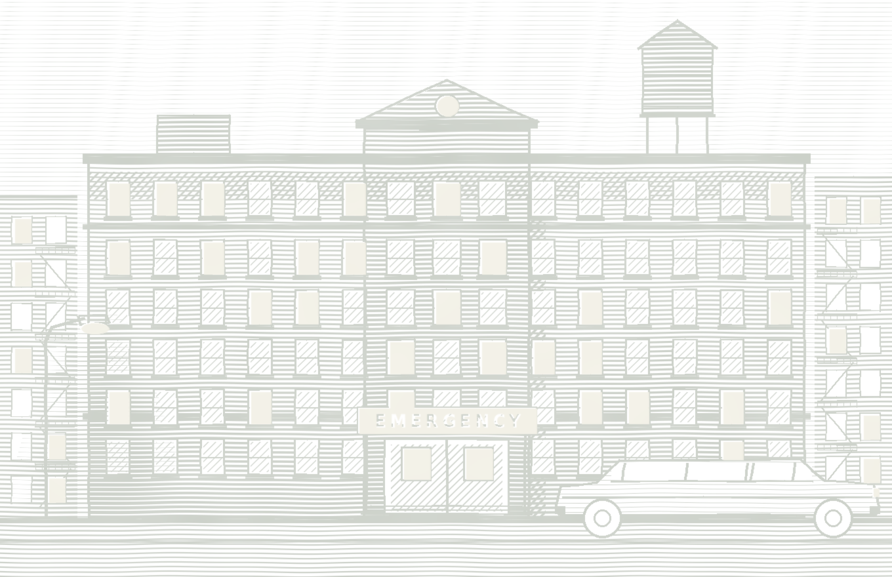

THE COMMITTEE TO SAVE THE SOUTH BRONX HOSPITAL1990
Souvenir Journal
A NIGHT FOR THE
South Bronx
A benefit dinner to keep the hospital doors open.

HOSTED BY
Mr. Frank White
DINNER
Seven o’clock, black tie
THE GOAL
$16,000,000
The Grand Ballroom, Manhattan
Dinner $1,000 a plate. Tables of ten, $10,000. Every dollar stays in the South Bronx.
Please keep this journal.
Dinner $1,000 a plate. Tables of ten, $10,000. Every dollar stays in the South Bronx.
Please keep this journal.